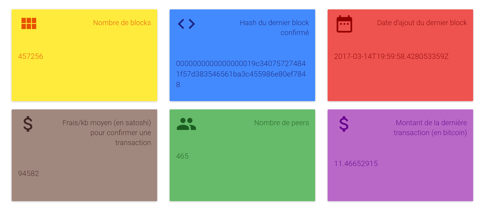
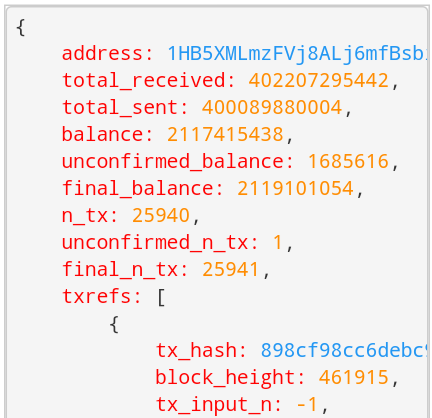
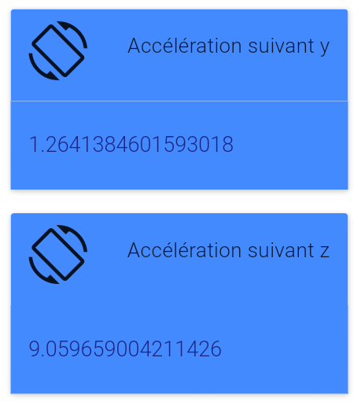
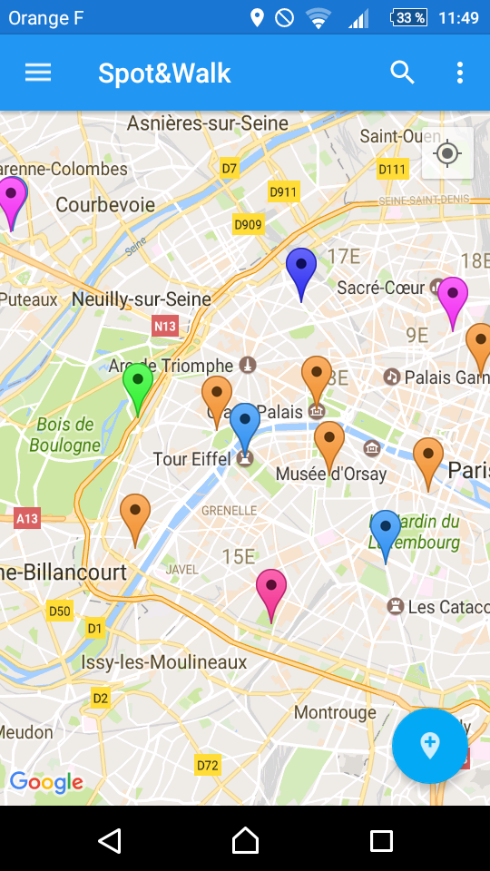
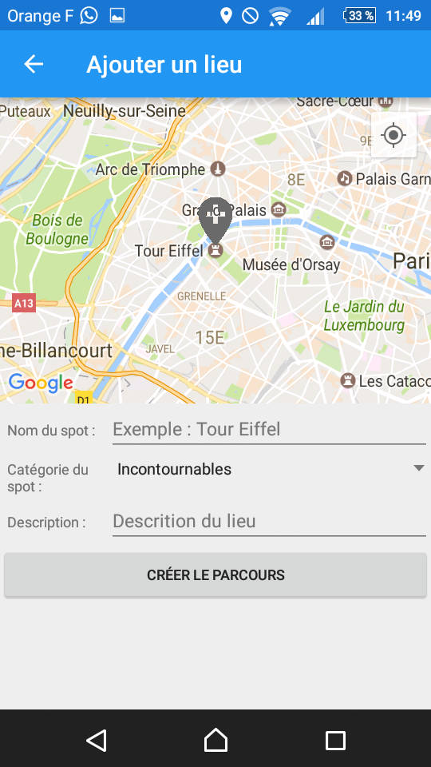
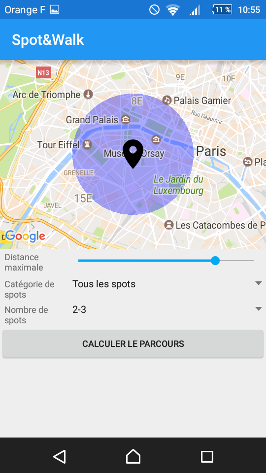
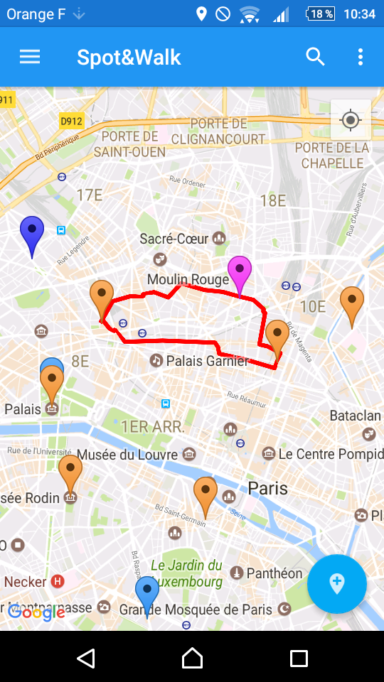

Maxence Coupet
étudiant à l'ESILV en 3ème année
Après 2 années d’études en classe préparatoire PT, j’ai intégré l’ESILV pour choisir la majeur Ingénérie Financière. Actuellement en recherche de stage de juin à août 2017.
- Récupération d'informations sur la blockchain via des WebServices.

- Recherche d'informations précises sur la blockchain via un formulaire.

- Création de QR code correspondant à une addresse de la blockchain.
- Bot Telegram permettant d'obtenir des renseignements sur la blockchain.

- Récupération et affichage des données d'accélération et d'orientation d'un téléphone.
- Envoi des données à un serveur pour les traiter.




